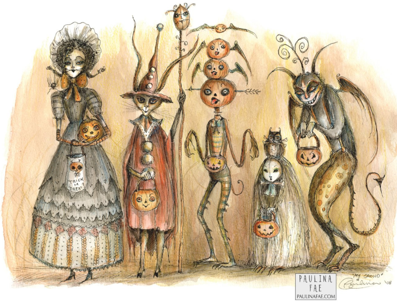
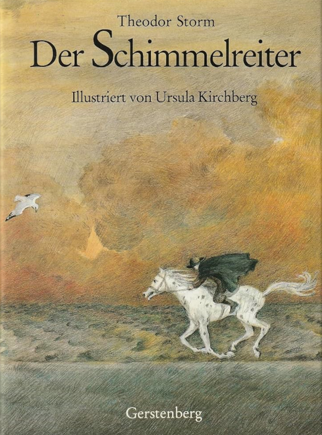

Alla vi barn i Minnesotan Bullerbyn1 All of us kids in Minnesotan Bullerby
- Suffering through yet another North Shore Halloweenus interruptus,
- Brothers Bart (poet-writer) and Russ (musician) Sutter performance at my Grand Marais library on November 8, and
- Two books found at a local thrift store:
- Jack & the Ghost by Chan Poling and Lucy Mitchell (2019; University of Minnesota Press) and
- an old 1962 Viking Press English translation of Astrid Lindgren’s The Children of Noisy Village.
A nervous coexistence
Since arriving in Duluth in 2003 with my Kansas Mennonite (non-conservative, Northern German/Dutch) wife and our twin boys, finally settling in Grand Marais in 2007, I’ve been updating a growing list of issues I have with this Northern Midwestern Minnesota social and cultural scene, especially here north of Duluth on the North Shore of Lake Superior. How do I describe these fellow humans around here? Certainly not all of them, but so many strike me as insular, provincial parochial, emotionally immature, stiltedly intentionally anti-intellectual dumbed-down, an oddly studied déclassé forced unsophistication. Again, not all, but so many seem to be chasing after some hodgepodge of recursive hyperreality tropes, come here to live out some fantasy of what modern post-suburban wilderness living is supposed to be. I call them the Flannel Shirt People, the Carhartt Filson Steger-Mukluk Wintergreen-Anorack Nazis, the Red Green Show extras who drive Jeep Cherokees, Toyota Tundras, and Subaru Outbacks. Those insisting life in this Arrowhead Region must be the adult continuation of their Kumbaya around the campfire childhoods.
Grand Marais: North Shore Ground Zero. Besides the minority local-yokel born-and-raised-heres who’ve mainly assimilated into the greater MAGA Trump populace southwards, we feature two more big Venn diagram circles: the well-off, DFL-voting retirees, and the middle- to upper-class suburbanites come here to make this wedge of wilderness their Jack Fucking London! Ernest Fucking Hemingway! Robert Fucking Service! lost Alaskan county fantasy park.3 Oddly, all this backwoods fantasy-silo stuff seems to fade back into statistical insignificance once I reach the outskirts of Duluth. Although culturally lean, the Zenith of the Unsalted Sea has always been a back-to-normal-people mini-vacation for me.
Troll-baiting? I fully understand that all of these Jimmy Billy Jack London Thudpucker She Ran Calling Wildfire types are simply after some authenticity, some truth, purity, simplicity, innocence, some modicum of reality in their lives, and, yes, I suppose it’s all good on some level to try some new tunnel’s escapism promises. But really, how did I, someone wanting, doing basically the same things, get so jaded and anti towards all my fellow North Shore invasives? Why am I so out of sync with their particular version of Cottagecore hyperreality?4 Also consider Theo Adorno’s (Frankfurt School) theory of pseudo-individualism, i.e., the mass illusion created by modern advertising and marketing that by owning a certain set of what are still just standardized and mass-manufactured products you become unique, smart, daring, fun and exciting, ahead of the pack individual… I blame Europe and my almost ten years there, specifically Germany and Switzerland. For it was in Europe that I became exposed (indoctrinated in-) to the Old World way of thinking and being.
As I’ve explained elsewhere, Europe, the Old World, the Eastern Hemisphere in general, is working with four dimensions, while New World Americans only with the three dimensions of standard physical space. The fourth dimension is of course time, but in a social-cultural sense time as history … which is necessary in order to have any sort of real rooted culture. Americans, lacking history and real rootedness, are like children fighting to dominate the ever-changing Zeitgeist, an endless game of King of the Hill won by those with progressively less and less actual value or merit. That is to say, we’re just kaleidoscoping churn, with nary anything of real or last value coming forth. As a German once said to me, You Americans are trying to put together a jigsaw puzzle missing half the pieces and no box lid to know what it’s supposed to look like; and so you just cut and glue and tape some abstraction together, then fight over whose is the right picture. Indeed, such were the broadsides I took while trying to play the Jimmy Steward aw-shucks American Boy over there…
Alas, but I’m the American who got verdeutscht5 … germanized, but with the derogatory, negative ver- prefix, e.g., Luther called his Bible a Verdeutschung from the original Catholic Latin Bible. and now can’t resettle back in my land of origin, hard as I’ve tried.6 Yes, I should have stayed! But A) they don’t just hand out citizenship to anyone, assimilated as I was or no, and B) a busted engagement put me in an irrational state of mind, which had me scurrying brokenhearted back home. Alas… Germany especially was my Hogwarts where I was sorted into the Ravenclaw House, i.e., the intellectuals. And ever since it has been this strange Euro-instilled noblesse oblige driving me to keep learning, keep exploring and growing intellectually—which puts me increasingly at odds with the Kumbaya singers, the ex-suburbanites who have reinvented themselves as these rugged outdoors types who cannot, will not ever be caught sounding intellectual. Here an odd sort of unspoken anti-intellectual brain-shaming, reverse discrimination is de rigueur. Apparently it’s hip to play the ignorant peasant.
Yet another Halloweenus interruptus
Being ruled by my Dark Muse, being darkly-inclined, Halloween is my premiere, dare I say sacred holiday. But once again I was stuck with The Flannel Shirt People who simply don’t, won’t get Halloween, some of whom intentionally, actively work against it. I’m saying this burg is ruled by Halloween shunners, Samhain Eve putzes. But what really depressed me was the screening of the original Beetlejuice by the Grand Marais Film Society on the 25th of October. Here was to be the only visible, outwardly public acknowledgement of Halloween—besides the trick-or-treating where helicopter parents hover nervously around their children in the afternoon! (Can’t risk darkness.) Read on.
I arrived that night at the ACA7 Arrowhead Center for the Arts located on the ISD 166 schoolgrounds. auditorium to an almost full house. Promising. But I noticed it was all the usual flannel-shirted suspects. Then to my horror they played this video from the local singing group Basalta as a preview. Suffice it to say there could not have been a more opposite vibe to Beetlejuice and the general gothy Halloween spirit than this next-gen sucky folksinging. These were Millennial women with their strong take-no-prisoners Feminism 2.0 vibe poking me in the eyes with sticks and singing their overwrought, sappy folk. Apparently Boomers have not cornered the campfire Kumbaya market…
But then I have history with this community’s treatment of Halloween. Our very first Halloween back in 2008 was a sober awakening to the anti-Dark attitude when the wife and I tried to put on a dark “Halloween Poetry Reading” at the Art Colony’s old church space. We distributed fliers featuring the brilliant Paulia Cassidy’s gothy art inviting the community to snacks and gothic, Halloween-themed, Poesque poetry and music.
 Paulina Cassidy's My CrowdBut the town just wasn’t having it. Long short, only a few people—mainly kids, i.e., trick-or-treaters come for the snacks—trickled in throughout the evening. We had advertised the event as open mic as well. But when anyone did “contribute” it seemed intentionally, stick-in-the-eye contrarian to our gothy dark theme. For example, one individual just had to read sundry North-woodsy poems (mainly Robert Service) completely unrelated to Halloween. As you can imagine, we came away shocked and defeated. We also heard that the main bar in town always features a Reggae band for Halloween, intentionally aiming to counter the dreary-gloomy darkening seasonality with happy, cheery, uplifting, let’s imagine we’re vacationing in sunny Jamaica spirits! Alas, what sort of people must needs hate and cancel Halloween so? These intellectually emotionally minimalist North Shorers, that’s who…
And so the lights dimmed and Beetlejuice began—and I slowly got the indescribable feeling that I was the only person in that three-hundred-plus audience who was getting, enjoying it.8 The feeling was similar to Laibach’s reception in North Korea. See this. Of course I’d seen it many times, but as the end came round I was the only one stirring. In other words, nobody else had ever seen it—and had no idea it was about to end. I left during the credits—as did a woman dressed “office goth.” We chatted a bit in the parking lot—she was just visiting from the Cities—and I left too devastated to see straight. A sinusoidal blind fury/deep depression set in and made me despondent for the next few days. But what to do? Stay and fight or pack and leave? As I’ve said before, this place, this Arrowhead region is so perfect darkly-speaking.
The Sutter Brothers’ performance
And then came the Sutter Brothers’ performance. The audience at the Grand Marais Public Library on that November 8 Friday afternoon numbered north of fifty, south of a hundred, nearly all Boomers like me, the DNA visibly skewed Scandihoovian, and, my knowing at least a third of them, people who would have partied with Fred Rogers and bristled at Saturday Night Live’s mocking sketches of him. Here were the Harris-Walz voters, A Prairie Home Companion devotees, students, supporters of North House Folk School, marchers under the Rainbow Flag, attendees of all sorts of “workshops” on New Age esoterica, again, the “usual suspects.” The predominant psych marker was this unique Minnesotan take on Freudian emotional immaturity. These were the people for whom childhood trips up the Shore mustn’t ever end. Here was just another reliving of the campfire in the deep woods singing about Michael rowing his boat ashore. But how dare I rain on their parade? After all, this is their bailiwick. I’m the odd-man-out here…
Musician Ross began with an actual children’s campfire song, then came a Bill Staines song. The goth in me cringed spastically, Bill Staines of course being the antidote to the dark sarcasm and nihilistic cynicism of John Denver. But legion were the people who ate up Bill Staines, who never understood that the film A Mighty Wind 9 A Mighty Wind was made by the same people who made This is Spinal Tap and intended as a “mockumentary.” was mocking them and their overwrought, saccharine sucky folk and the particular het up milieu behind it.
What touches us emotionally? Whither sentimentalism? And why is one man’s sentimentality another’s mawkish kitsch? Reaching into our gentler core, sharing such matters of the heart is fraught. The main problem is vulnerability and triggering defensive responses. We have a logic train which we errantly assume is dominant, but then an emotion braid which reach far into the past where it can be hopelessly frayed and tangled up. I’ve heard that Garrison Keillor can be short if not irascible whenever an East Coast city-slicker sneers or casts aspersions on his Northern Midwest shtick. Indeed, it’s all good until somebody is clearly not playing along, paying proper homage. And then out come the knives, and the reprobate is driven off as if he were a blasé Roman Catholic discovered at the frenzied peak of a Southern Baptist tent revival.
One inner sanctum comparison might be with my parents who were born in 1935,10 A strange generation, sometimes called the Silent Generation, that came between The Greatest Generation (people born between 1901 to 1927) and the Baby Boomers (1945 - 1960). They were a sort of second “Lost Generation” that exhibited dominant “old soul” traits. Think Audrey Hepburn and George Peppard’s melancholic characters in Breakfast at Tiffany’s, the generation’s theme songs Moon River, The Shadow of Your Smile, and then of course The Girl From Ipanema as sung by one of their leading old soul mascots Astrud Gilberto. college-educated (Washington University, St. Louis), vaguely intellectual. They lived in tumultuous, ever-changing times, but their generation’s penetralium was soft and gentle and compassionate—all while being very grownup and ultimately fatalistic … as if old souls who had come this way many times before and experienced only tragedy. Indeed, they came and went oh so fatalistically, almost unnoticed.
Not us Boomers! Loud, brash, trouble-making, facile, feckless “new souls” as we were. We talked big, delivered little. Our “rock stars” sang embarrassingly silly lyrics, tore up hotels, and smashed guitars on stage.11 Seriously, can you imagine GenXer Tracy Chapman smashing her acoustic guitar? But now middle-aged and older we feel the need to finally begin sorting out, laying claim to some manner of adulthood—if it’s not too painful and troublesome.
What do Bart Sutter, Sigurd Olson, and Sam Cook all have in common? I might begin by saying they all lay out an impressionistic but strangely noncommittal vagueness in their written musings. As if you must have one foot in some hazy Northern European peasant past and the other in our always tightly circumscribed, played-down American college-educated caste. As if nobody dare step up and actually say anything consequential lest it sound too intellectual, lest some paragraph of Jantelagen be violated. And so up float shiny soap bubbles that must never drift above a cultural-intellectual ceiling only coming up to the knee. Was East Germany this repressed, repressive?
This might be explained as yet another exit taken to escape our dominant modern urban-intellectual cult of literary realism. I mean the later realism where Faulkner, Nabokov, Samuel Beckett deal in protagonists who mainly just savage one another emotionally spiritually, spiraling down into a nihilistic void. And yet when I read Sutter’s poetry or non-fiction (Cold Comfort) I can’t help but get a Mod-real Lite® vibe. He still wants to hint at existential meaningless—in order to fit in with the general modern trend? Don’t beseech or preach, mind your Jante Ps and Qs, i.e., keep everything at the Scandi-peasant level, and all will be fine.
Contrast any of the “nature-themed” writings of the above-mentioned with the Romantic Era poets such as the Brontë Sisters or Wordsworth. I might even claim Romanticism was a new Northern European nature paganism. But when I read our local guys, I never feel like the North Woods is anything but vaguely “inspirational,” always this big force majeure thingy but held maddening anti-sublime. I don’t mean to say this is not interesting writing, for how else could one be so Minnesotan formulaic conformist except with great skill? They have spoken to, reached the nervous Angsthase12 Angsthase or frightened rabbit is a German term alluding to the fearful yet resentful glare of a scared rabbit staring at you, the supposed predator, from within a briar patch. Minnesota audience and have gain fame and some coin doing it.
Why do America’s supposedly creative people fear beauty, forever shunning and dancing around it? Why must their artistic output so often have that obligatory whiff of pee, cow shit? Why is openly expressing profundity like farting loudly at Thanksgiving dinner? Why is watery peasant kitchen philosophy all we dare share? This Northern audience likes its cheesy, schmaltzy folk music, but then its protagonists must be grimy, low-word-count dullards and simpletons—always this low-rent, proletariat version of the Byronic hero. The intentionality, the necessity of this subculture, again, feels almost dark-day Stalinist.
Bullerby Syndrome? Nej tack…
As I understand, modern-day Old World Scandinavian social scientists have come here to study our isolated, time-capsuled New World immigrant Scandinavians. Most obvious is the general religious hangover, i.e., that here is a Lutheranism long since faded away from the Scandinavian homelands. Meaning here are yet strong echoes of that yesteryear Scandi-Lutheran Calvinist-Pietist which is led by strict morality and emotional minimalism.13 See this for a parallel “severist” English Dissenters’ take on Protestantism.
One of the sadder things about my time in Scandi Minnesota has been watching any sort of Scandihoovian roots efforts see tepid reactions, at best flounder.
Here is no real culture? Curiously, I have found the stray soul of Scandi descent who has tried, largely unsuccessfully to make connections with the homeland. Here in Grand Marais we have a woman who has tried to whip up interest in all things Swedish. There are a handful of people who can speak some language. But it’s dying out. The high water mark was probably the Nordic Roots Festival at the Cedar Cultural Center in Minneapolis, the last year being 2008.
What is known as the Bullerby Syndrome is the idealization of that particular other-century
Poling and Mitchell’s Jack & the Ghost
America … this great continent-wide land initially colonized by Euro-peasants … forever doomed to arrested, stunted culture formation … held back by peasantisms never to be overcome …. doomed to an eternal, Sisyphean cultura interruptus. Alas…
I suppose what annoyed me the most about Poling and Michell’s Jack &
the Ghost is, once again, it dared not be too, what?, cultivated,
erudite, highbrow literati. It presents itself as a gothic tragedy, a
Lake Superior version of, say, Theodor Storm’s Schimmelreiter,14
Children’s picture book version

or
The Sailor Who Fell from Grace with the Sea 15
Very gritty, grimy mod-real book by the modern Japanese
Neo-Nietzschean writer Yukio Mishima, then made into a film in 1976.
but immediately
cuts expectations by presenting itself as a quasi-children’s picture
book with Mitchell’s faux naïve art. The main protagonist is a
fisherman named Jack. As the pages turn, we never get the impression
that Jack has much mental or emotional maturity beyond a
grade-schooler. Jack, seemingly a simpleton, has lost his fiancee in a
storm on what is called (lower-case) “the great lake,” thus Lake
Superior, before the village of Greyshore (British English spelling
grey), which must be Grand Marais. And yet the creators have
redesigned/rebuilt Greyshore/Grand Marais as Hawthorne’s Salem or
Lovecraft’s Marblehead Massachusetts with crowded-together
eighteenth-century clapboard buildings and cobblestone streets,
certainly nothing like the real Grand Marais…
There was a time in film when men and women were portrayed by—men and women, i.e., grownups. Then came the era of dumbed-down persona, e.g., the eternal pretty high school boy look of Beau Bridges, Brad Pitt, and Tom Cruise. When we see Sarah Miles (below) in The Sailor Who Fell from Grace with the Sea we know we are looking at a grown woman of some class and breeding—which is of course eschewed by so many today.

My Kansas Mennonite wife and I came to Duluth back in 2003, moved up the shore to Knife River, finally landing in Grand Marais in 2007. Disappointment, disenchantment grew, however, and in 2014 she just had to get back to her people. And so we packed up and headed to Northern Indiana where the Anabaptists are dominant and she could attend a Mennonite seminary.
Why Jack must be a peasant fisherman while Richard Burton and Elizabeth Taylor’s characters in The Sandpiper are denizens of the day’s general culture.
This particular Minnesotan Scandihoovian subculture.